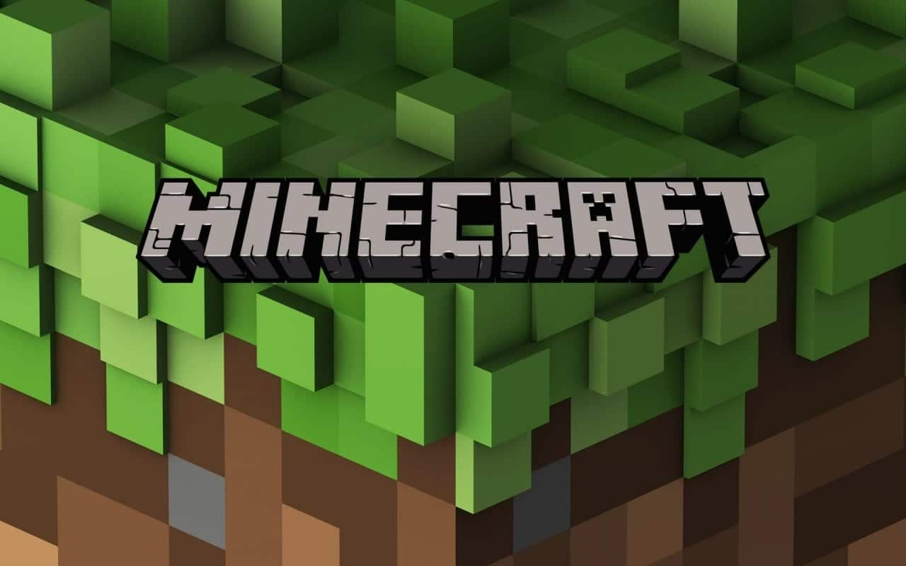

Тексты особенно удачных песен наших групп и исполнителей, ставшие хитами
Наши горячо любимые группы и музыканты создали и подарили нам такие «запасы позитивной энергии» - сверх популярные песни, которые трудно переоценить. Да, и никто не пытается этого делать! Огромное количество людей получает кайф, информацию, добрый и объективный вектор, помогающий благополучно двигаться по жизненному пути. Эти энергетически-информационные источники доступны и мы можем наблюдать их неисчерпаемость, практически это «вечный двигатель», а также перемещение их в пространстве, пустоте, воздухе и по проводам. Это поразительно!
Перейти на Яндекс МузыкуНа этой и следующих страницах размещены списки известных песен, за которые огромное спасибо авторам и исполнителям. Это песни, делающие настроение и заряжающие позитивом.
Текст песни «Головы на завтрак»
Я ем головы на завтрак
Не думая о завтра
Трэпим на квадратах
Кто здесь главный по Minecraft-у?
Я ем головы на завтрак
Не думая о завтра
Трэпим на квадратах
Кто здесь главный по Minecraft-у?
Minecraft, Minecraft, Minecraft, Minecraft
Minecraft, Minecraft, Minecraft, Minecraft
Все шикарно, все красиво когда квадратные сланцы
Заценил твои скины и унёс их в своем ранце
Мои жители со мной и мы в поисках сырья
Их здесь мили-миллионы, они все - моя семья
Если напиток, то только компот
Я его выпил и выиграл джекпот
И на видео, делаю идею
После ночи глаза светодиод
Если напиток, то только компот
Я его выпил и выиграл джекпот
И попал в пиксельных круговорот
Тут моя жизнь только наоборот
Я ем головы на завтрак
Не думая о завтра
Трэпим на квадратах
Кто здесь главный по Minecraft-у?
Я ем головы на завтрак
Не думая о завтра
Трэпим на квадратах
Кто здесь главный по Minecraft-у?
Minecraft, Minecraft, Minecraft, Minecraft
Minecraft, Minecraft, Minecraft, Minecraft
Да-да, не удивляйся, да-да
Ты видишь в глазах - это азарт
Моя жизнь игра - это стандарт
Движения hot, а твои - вода
Я в облаках, хоть я не звезда
Все, что со мной с опытом добыто
И с лица пот, вода, не отпущу никогда
Глаза - монолит-ы
И я под утро убит-ый
Мысли - динамит-ы
Рвут, если ты сшит-ый
Хочу на квадраты
Руки тянутся на стол (Тянутся на стол, е)
Я лечу за дропом
Ставлю этот мир на стоп (Этот мир на стоп)
Я ем головы на завтрак
Не думая о завтра
Трэпим на квадратах
Кто здесь главный по Minecraft-у?
Я ем головы на завтрак
Не думая о завтра
Трэпим на квадратах
Кто здесь главный по Minecraft-у
Minecraft, Minecraft, Minecraft, Minecraft
Minecraft, Minecraft, Minecraft, Minecraft